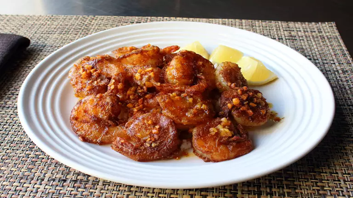

Home
Hawaiian Garlic Shrimp Scampi

Description
Here's a Hawaiian-style scampi with extra garlic and a rice flour coating. Serve over rice with fresh lemon wedges. "If you're a garlic lover, you're going to want to pull out your bucket list and add this recipe to it," says Chef John. "I absolutely love this, and I think you will too."
Ingredients:
- 1 head garlic
- 4 tablespoons unsalted butter
- 1 pound frozen large deveined, shell-on shrimp, thawed
- 2 tablespoons rice flour
- 1 tablespoon paprika
- 1 1/2 Teaspoons kosher salt
- 1 teaspoon cayeene pepper
- 2 tablespoons olive oil
Directions:
- Separate garlic cloves into a bowl; place another bowl on top. Shake until all peels separate from cloves, about 30 seconds, being careful not to shake too hard. Mince garlic cloves.
- Melt butter in a sauté pan over medium heat; add minced garlic. Cook, stirring occasionally, until golden brown, 2 to 3 minutes; transfer to a small bowl and set aside.
- Pat thawed shrimp dry with paper towels; add to a large mixing bowl.
- Combine rice flour, paprika, salt, and cayenne pepper in a small bowl; sprinkle over shrimp and toss until completely coated using a large spoon or spatula.
- Heat olive oil in a nonstick skillet over medium-high heat. Add shrimp in a single layer, in batches, and cook until browned and just barely cooked through, 2 to 3 minutes per side. Add some garlic butter; cook for 30 seconds more. Repeat with remaining shrimp and garlic butter. Serve immediately.
-
Serve it over white rice with fresh lemon wedges.